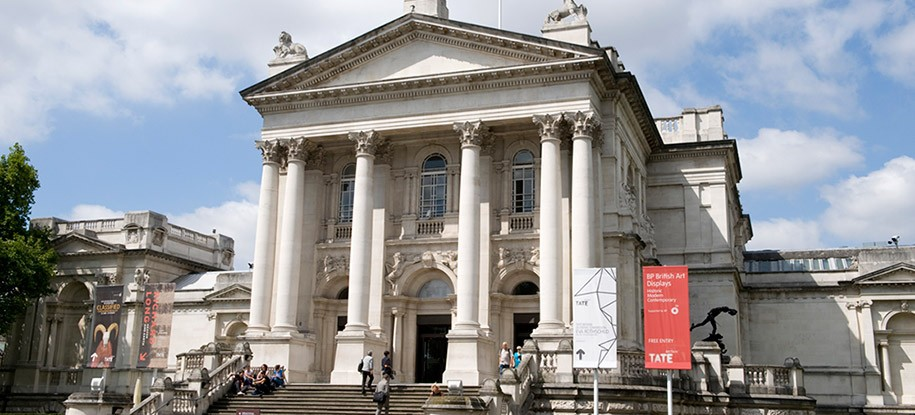

Arte en Londres

En Londres hay muchos museos, galerías y otras instituciones culturales, algunos de los cuales son grandes atracciones turísticas además de cumplir con un papel investigador. El primero fundado fue el Museo Británico, en Bloomsbury, en el año 1753. Este museo contuvo en un principio antigüedades, especímenes de historia natural y la biblioteca nacional, pero en la actualidad tiene unos fondos con siete millones de piezas de todo el mundo. En 1824 se fundó la National Gallery para albergar la colección nacional británica de pintura occidental, una institución que hoy ocupa un lugar preeminente en Trafalgar Square. En la segunda mitad del siglo XIX se creó Albertopolis, en South Kensington, un área salpicada de instituciones culturales y científicas, entre ellas tres grandes museos nacionales británicos: el Museo de Victoria y Alberto, el Museo de Historia Natural y el Museo de Ciencias. La galería nacional de arte británico se expone en la Tate Britain, creada en 1897 como anexo de la National Gallery. La Tate Gallery, como era conocida antes, también se convirtió en un importante museo de arte contemporáneo y en el año 2000 su colección fue trasladada a la Tate Modern, una nueva galería de arte situada en la reformada central de energía de Bankside.'0
Londres es una de las capitales mundiales de la música clásica y popular y sede de grandes sellos discográficos, como EMI, así como hogar de incontables grupos de música, músicos y profesionales de la industria. En la ciudad hay también varias orquestas y salas de conciertos, como el Barbican Centre (base de la Orquesta Sinfónica de Londres), Cadogan Hall (Orquesta Filarmónica Real) y el Royal Albert Hall (los Proms).237 Los dos teatros principales de ópera son la Royal Opera House y el London Coliseum.237 Por supuesto, en la ciudad existen numerosos conservatorios de música: la Royal Academy of Music, el Royal College of Music, la Guildhall School of Music and Drama y el Trinity Laban Conservatoire of Music and Dance.
En la ciudad hay gran cantidad de lugares para conciertos de música rock y pop, entre ellos grandes estadios como Earls Court, Wembley Arena y O2 Arena, y locales de tamaño mediano como Brixton Academy, Hammersmith Apollo y Shepherds Bush Empire.237 En la capital se celebran varios festivales de música, entre ellos el Wireless Festival. Londres es el hogar del primer y original Hard Rock Café y de los famosos Abbey Road Studios en que The Beatles grabaron varios de sus más grandes éxitos. En los años 1970 y 1980 saltaron desde las calles de Londres músicos y grupos que triunfaron en todo el mundo como Elton John, David Bowie, Queen, Pink Floyd, King Crimson, Elvis Costello, Yes, T.Rex, Cat Stevens, Ian Dury and the Blockheads, The Kinks, The Rolling Stones, The Who, Electric Light Orchestra, Madness, The Jam, The Small Faces, Led Zeppelin, Iron Maiden, Motörhead, Fleetwood Mac, The Police, The Cure, Cream, Phil Collins y Sade.244.
Londres también fue importante en el desarrollo de la música punk245 con figuras que vivieron y trabajaron en ella como Sex Pistols, The Clash244 y Vivienne Westwood. Más recientemente han emergido de la escena musical londinense George Michael, Bananarama, Ultravox Bush, Seal, Pet Shop Boys, Siouxsie and the Banshees, las Spice Girls, Jamiroquai, Blur, The Prodigy, Gorillaz, McFly, The Libertines, Babyshambles, Bloc Party, Florence and the Machine , Mumford & Sons, Coldplay, Amy Winehouse, Adele, One Direction y Little Mix.246 247 248 En Londres también se han desarrollado géneros musicales como UK Garage, drum and bass, dubstep o grime a partir de otros estilos foráneos como el reggae o el hip hop.